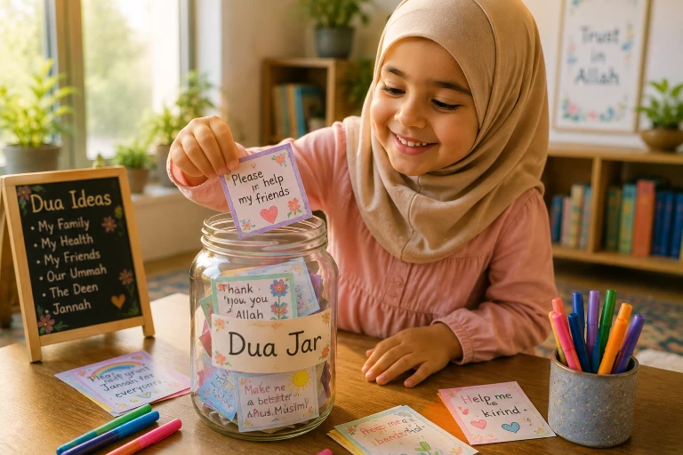

For many children, "dua time" can feel like just another rule to follow — a quiet moment where they have to stand still and repeat words they don't fully understand. But in Islam, Dua is not a chore; it is the ultimate conversation with the King of the Universe. It is a direct, unfiltered line to Allah, where no appointment is needed and no gatekeeper stands in the way. In this comprehensive guide, we will explore creative, joyful, and practical methods to transform dua from a routine ritual into the most beloved part of your child's day.
📖 In This Complete Guide, You'll Learn:
- How to reframe dua as a "chat with a best friend" rather than a religious obligation
- 5 interactive, hands-on activities (like the Dua Jar and Dua Walk) to make dua exciting
- How to teach children to make personal duas in their own language
- The best times and places to make dua with kids (beyond just after Salah)
- How to handle it when your child asks for something "inappropriate" in their dua
- How to build a "Dua Diary" to track answered prayers and build unshakeable Iman
🔑 Key Takeaways
- Keep it short and sweet; a 1-minute sincere dua is better than a 10-minute forced one.
- Let them use their own words. Allah understands every language and every heart.
- Model the behavior: let them hear YOU making heartfelt, personal duas out loud.
- Celebrate answered duas visibly to show them that Allah is always listening.
- Connect dua to their daily emotions (happy, scared, hungry, excited).
📑 In This Article
- Reframing Dua: From Ritual to Relationship
- Activity 1: The Magical "Dua Jar"
- Activity 2: The "Dua Walk" (Nature Connection)
- Activity 3: Dua Art and Visualization
- Teaching Them to Use Their Own Words
- The Power of Family Dua Time
- Handling "Inappropriate" Duas Gracefully
- Frequently Asked Questions
- Final Thoughts
Reframing Dua: From Ritual to Relationship
Before we dive into games and activities, we must change the narrative. If we only tell our children to make dua when they are in trouble or after prayer, they will view it as a transactional tool. We need to teach them that Dua is simply talking to Allah.
The Prophet (PBUH) said: "Dua is the essence of worship."
— Sunan At-Tirmidhi 2969Tell your child: "You know how you love talking to your best friend? Allah loves hearing your voice even more. You don't need to use big Arabic words if you don't know them yet. Just talk to Him. Tell Him about your day, your fears, and your dreams."
Activity 1: The Magical "Dua Jar"
This is one of the most effective and visually rewarding activities for young children. It turns dua into a daily surprise.
How to Make It:
- Get a clear glass jar and decorate it together. Label it "Our Dua Jar" or "Allah's Mailbox."
- Cut colorful paper into small strips. On each strip, write a simple, relatable dua. (e.g., "Ya Allah, make my heart happy," "Ya Allah, protect my friends," "Ya Allah, give us yummy food today.")
- Fold them and put them in the jar.
- Every day at a specific time (like after Maghrib or before bed), let your child pull out one strip. Read it together and make that specific dua.
Leave some blank strips! Let your child draw a picture or dictate their own personal dua to you, and add it to the jar. This gives them ownership over the process.
Activity 2: The "Dua Walk" (Nature Connection)
The Quran constantly points us to nature as a sign of Allah. A "Dua Walk" combines physical activity, Tafakkur (reflection), and dua.
How to Play:
Go for a walk in a park or your neighborhood. Play a game of "I Spy... and Dua!"
- See a bird? "SubhanAllah, Allah made this bird fly. Ya Allah, thank you for giving us legs to walk."
- See a tall tree? "Ya Allah, make me grow strong and tall like this tree, and let my roots be deep in Iman."
- Feel the sun? "Ya Nur (The Light), fill my heart with your light."
This teaches them that dua isn't confined to a prayer mat; it can happen anywhere, anytime.

Activity 3: Dua Art and Visualization
Children are highly visual. Sometimes, they don't have the vocabulary to express their deepest desires, but they can draw them.
The "Dream Dua" Drawing:
Give them paper and crayons. Ask them, "If you could ask Allah for anything in the whole world, what would it be? Draw it!"
When they finish, sit with them. Ask them to explain the drawing. Then, hold the drawing between your hands, raise your hands in dua, and say: "Ya Allah, look at this beautiful drawing. You know what is in my heart. If this is good for me, please grant it to me."
Hang the drawing on the fridge as a reminder that Allah sees their dreams.
Teaching Them to Use Their Own Words
While we must teach them the beautiful, authentic duas from the Sunnah (before eating, sleeping, entering the house), we must also encourage spontaneous, personal dua.
Prompting Personal Dua:
- When they are excited: "You look so happy about the zoo trip tomorrow! Let's thank Allah and ask Him to make it a fun day."
- When they are scared: "I know the dark is scary. Let's ask Allah, Al-Hafiz (The Protector), to send His angels to watch over us."
- When they are angry: "It's okay to be mad. Let's ask Allah to cool our hearts down, just like water cools down fire."
By connecting dua to their immediate emotions, you are teaching them emotional regulation through faith.
The Power of Family Dua Time
Children learn by imitation. If they only see you making silent, private duas, they won't understand the power of collective, vocal dua. Establish a daily "Family Dua Circle."
How to Do It:
- Choose a consistent time (e.g., right before bed, or after Friday prayer).
- Sit together in a circle. Hold hands or just raise your hands together.
- Take turns. The parent starts: "Ya Allah, thank you for our safe home. Ya Allah, guide our neighbors." Then pass the turn to the child.
- Keep it light. If they say, "Ya Allah, let me have ice cream tomorrow," smile and say "Ameen!" (You can gently guide them later to ask for bigger things, but validate their sincerity first).
The Ultimate Family Dua: "Rabbana atina fid-dunya hasanatan wa fil-akhirati hasanatan wa qina 'adhaban-nar."
"Our Lord, give us in this world [that which is] good and in the Hereafter [that which is] good and protect us from the punishment of the Fire." (Surah Al-Baqarah 2:201)
Handling "Inappropriate" Duas Gracefully
What happens when your child makes a dua for something haram, like "Ya Allah, let me punch my brother" or "Ya Allah, let me eat candy for breakfast"?
Do not scold them, laugh at them, or say "You can't ask Allah for that!" This shuts down their vulnerability and makes them feel ashamed of talking to Allah.
1. Validate the feeling: "I see you are really angry at your brother right now."
2. Correct the action: "But we don't ask Allah to help us do something wrong, because Allah only loves good things."
3. Offer an alternative: "Instead, let's ask Allah to help us both be kind to each other and share our toys."
Frequently Asked Questions
Start Your Family Dua Circle Tonight
You don't need any special equipment. Just sit with your children before bed, hold their hands, and ask them, "What is one thing you want to tell Allah today?" Listen to their answer, make the dua with them, and watch their hearts open. May Allah make our children among those who are constantly connected to Him through dua. Ameen.
What is the funniest or most beautiful dua your child has ever made? Share below!
Final Thoughts
Teaching our children to make dua is teaching them how to survive in this world and succeed in the next. It is the ultimate tool for resilience, gratitude, and hope. When a child knows that they can whisper their deepest fears and wildest dreams to the Creator of the Universe, and that He is actually listening, they will never truly be alone. Be patient, be creative, and most importantly, be sincere. Your own love for making dua will be the greatest lesson they ever learn. May Allah accept our duas, and the duas of our children, and make them a source of light for us in this life and the next. Ameen.